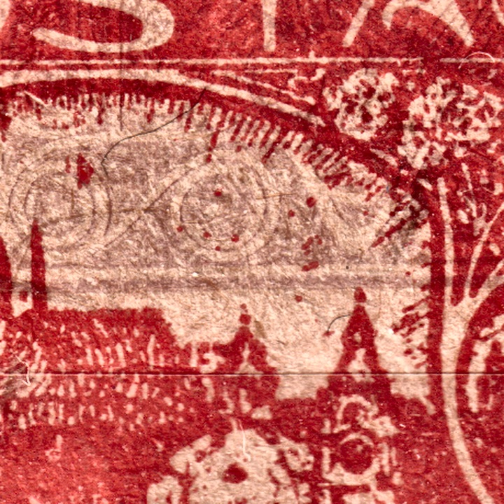

1
1Épreuves
Avant qu’une forme d’impression ne commence à produire des timbres destinés à la poste, on en tirait des empreintes d’essai. Elles servaient à juger le dessin, la couleur et la pression — on les imprimait donc en règle générale dans une couleur autre que celle de l’émission définitive et sur un meilleur papier, afin de voir ce dont la forme était capable et non ce que le papier autorisait. Pour l’étude actuelle des planches, elles ont une valeur particulière : elles saisissent la forme dans un état que l’usure n’a pas encore atteint, et parfois avant que les dernières retouches n’y aient été faites.
Position 96/I — épreuve bleue sur papier couché

| Couleur | bleu — une couleur dans laquelle le timbre n’a jamais paru |
|---|---|
| Papier | couché, lisse et blanc ; face au papier grossier du tirage courant, il retient un dessin bien plus fin |
| Présentation | non dentelée, à larges marges |
| Position | 96 / planche I |
| État de la planche | l’impression est nette sur toute la surface — la planche n’était pas encore usée |
La différence avec un timbre courant saute aux yeux. Sur le papier grossier du tirage courant, les hachures fines des arbres et des toits se fondent en aplats ; sur le papier couché, elles restent distinctes. Il en va de même des traits de contour de l’ornement : sur les pièces de production, ils sont souvent élargis ou interrompus, ici ils sont fins et continus. L’épreuve ne sert donc pas seulement de rareté pour collectionneur, mais d’image de référence — elle montre à quoi ressemblait le dessin avant que l’usure de la planche et les propriétés du papier ne commencent à lui en retirer.
Comparaison avec la position 96/I de production

Entre l’épreuve et la production, le dessin de cette position a été retouché. Il ne s’agit donc pas seulement d’une différence de netteté : la forme a encore été modifiée entre les deux empreintes. Deux changements sont attestés.
1 · Retouche de la spirale — de Is à IIs
La spirale décisive se trouve dans le coin supérieur gauche du dessin — c’est celle de gauche dans la paire de spirales de l’ornement d’angle, la même que la page Types du cinquième dessin décrit comme caractéristique de type. Sur l’épreuve, elle est ouverte (Is) : le tour intérieur va jusqu’au bout et s’arrête librement. En production, elle est fermée (IIs) — le tour se referme en un anneau complet. Pour cette position, le type de spirale n’est donc pas une propriété du cliché d’origine, mais le résultat d’une modification postérieure — et c’est essentiel pour la lecture des types sur la première et la deuxième planche. Un aperçu des positions et des deux types se trouve sur la page Types du cinquième dessin.

Il en découle une question à laquelle nous n’avons pas encore de réponse : les neuf positions de la planche I qui présentent la spirale ouverte en production également (2, 21, 22, 23, 49, 83, 91, 92, 94) sont-elles précisément celles que cette retouche a épargnées ? D’autres épreuves de la même planche pourraient y répondre.
2 · Modification de l’éventail près de la colombe de droite

La seconde intervention concerne l’éventail situé à droite de la colombe de droite. Sur l’épreuve, les rayons de l’éventail sont plus longs et nettement séparés les uns des autres ; en production, le dessin de l’éventail est différent. Une partie de l’écart tient au papier et à l’usure, mais le contour de l’éventail diffère même là où l’empreinte de production reste lisible.

Champ 68/I — une épreuve noire, l'état définitif du dessin

| Couleur | noir — une couleur dans laquelle le timbre n'a jamais paru |
|---|---|
| Papier | crème, à grain fin |
| Présentation | non dentelé |
| Position | 68 / planche I |
| État de la planche | correspond à l'impression de production — aucune modification ultérieure du dessin |
Contrairement au champ 96/I, ce champ constitue le cas inverse. Comparé à l'impression de production du même champ (série de référence des positions de la planche I), le dessin correspond jusqu'au moindre détail — y compris une petite irrégularité dans le coin supérieur gauche du cadre, que le champ 68 porte comme marque d'identification sur toutes les planches d'impression. Elle apparaît de façon identique sur l'épreuve comme sur l'exemplaire de production : aucune intervention sur la forme n'a donc eu lieu entre les deux tirages.

Le champ 68/I complète ainsi le champ 96/I depuis l'autre côté : sur 96/I l'épreuve a saisi la forme avant deux modifications, sur 68/I la forme était déjà définitive au moment de ce tirage. Tous les champs de la planche I n'étaient donc pas au même stade d'achèvement lors du tirage des épreuves.
Une feuille complète en noir — les chiffres de contrôle
Outre les épreuves individuelles, une feuille complète (10×10 champs) de POFIS 7 (le 15h) a également été conservée, imprimée entièrement en noir et non dentelée — le même objectif que pour les autres épreuves, mais cette fois à l'échelle d'une feuille entière plutôt que d'un seul champ. La période 1918–1920 correspond à l'époque où les feuilles de cette émission portaient ce que l'on appelle les chiffres de contrôle.

Les chiffres de contrôle sont des totaux cumulés imprimés sous chaque colonne de dix timbres — 1.50, 3.-, 4.50, 6.-, 7.50, 9.-, 10.50, 12.-, 13.50, jusqu'à 15.- Kč pour la feuille entière (10 × 15h = 1,50 Kč par colonne). Un employé des postes pouvait ainsi vérifier qu'il ne manquait aucun timbre dans la feuille en comparant simplement le dernier chiffre imprimé au prix de la feuille complète, sans avoir à compter les timbres un par un.

| Catalogue | POFIS 7 (le 15h) |
|---|---|
| Planche d’impression | VI |
| Période | 1918–1920 |
| Couleur | noir — une couleur dans laquelle le timbre n'a jamais paru |
| Présentation | feuille non dentelée, 10×10 champs |
Essais de couleur
Avant que ne soit décidé dans quelle couleur et sur quel papier on imprimerait, la même forme a été tirée plusieurs fois à l’essai. Les pièces ci-dessous proviennent d’une telle série : le même dessin, chaque fois dans une autre couleur ou sur un autre support. À côté du noir et du brun-noir, on y trouve un bleu, plusieurs nuances de rouge et deux tirages sur papier rosé.
Pour l’étude des planches, ces tirages sont précieux justement parce qu’ils sont propres — non dentelés, non oblitérés et imprimés plus soigneusement que la production. Le dessin y est lisible jusqu’au dernier trait, de sorte qu’on peut le comparer aux timbres de production de la même case.
1Essai brun-noir sur papier jaunâtre, non dentelé — case 7/II.
 2
2Essai d’un noir profond sur papier blanc, non dentelé — case 40/I. Le tirage le plus net du groupe ; il retient jusqu’à la gravure la plus fine des hachures du ciel.
 3
3Essai bleu, non dentelé — case 6/I. La nuance est plus froide et le papier plus blanc que sur l’essai bleu de la case 96/I ci-dessus.
 4
4Essai rouge sur papier jaunâtre, non dentelé — case 70/I.
 6
6Nuance rouge orangé — case 40/II. À la différence des autres pièces du groupe, elle est dentelée.
 7
7Tirage rouge sur papier rosé, non dentelé — case 90/IV ; un essai du support, non de l’encre.
 8
8Essai rouge-orangé sur papier rosé, non dentelé — case 82/I. Deuxième tirage du groupe sur support rose (cf. ZT 7), cette fois de la première planche ; marges plus larges que sur les autres pièces.
Un clic agrandit la pièce. Pour chaque pièce, la case et la planche ont été déterminées par comparaison avec les planches reconstituées. Il est notable que le groupe ne provient pas de la seule première planche : il contient des pièces des planches I, II et IV ; on a donc aussi tiré des essais à un stade plus tardif de la production, et pas seulement avant son début.
Tirage de macule
La macule est du papier gâté à l’impression, qui n’aurait jamais dû quitter l’imprimerie. Elle naît surtout au démarrage de la presse, avant que la pression et l’encrage ne soient réglés. Une fois gâtée, la feuille ne servait cependant plus qu’à de nouveaux essais — et c’est précisément ce que montre cette pièce.
Le dessin de la 15 h provient de la case 46 de la quatrième planche. Par-dessus se trouve pourtant une seconde impression, plus faible — et celle-ci n’appartient pas au timbre à 15 h : sur la même feuille on essayait la planche du 500 h de la même émission. La feuille est donc passée deux fois sous presse, chaque fois avec une forme différente.


Comment repérer l’impression étrangère
C’est plus difficile qu’on ne le croirait, car le 500 h porte la même vue de Hradčany que le 15 h — il en diffère par la valeur dans l’ovale et par les ornements du cadre. Les deux impressions se recouvrent donc en grande partie et se fondent en une surface floue. Ce sont les ornements qui trahissent l’affaire : dans le ciel au-dessus du château, là où le dessin du 15 h laisse le papier clair, apparaissent des spirales concentriques qui n’ont rien à y faire. La seconde impression est en outre plus faible et hors repérage, si bien qu’elle ne coïncide pas non plus avec le cadre.
En quoi elle diffère d’une impression empâtée et d’une double impression
Une impression empâtée est un timbre isolé avec un excès d’encre sur une feuille par ailleurs correcte. Une double impression est un second tirage de la même forme, simplement décalé. Ici, la seconde impression provient d’une planche tout à fait différente, et même d’une autre valeur — ce qui ne peut pas arriver sur une feuille destinée à l’émission. C’est précisément cette combinaison qui est le signe le plus sûr qu’il s’agissait de macule : sur un papier déjà passé par pertes et profits, on pouvait tout essayer.
La macule n’est pas une variété de catalogue. Elle n’a pas été émise, n’a aucune validité postale et sa valeur est documentaire — elle montre la production à un moment où elle n’était pas encore au point et, dans ce cas, que les mêmes feuilles servaient à essayer plusieurs planches l’une après l’autre. Pour les pièces proposées à la vente, il est donc légitime de s’enquérir de la provenance.
Pourquoi les épreuves sont précieuses pour l’étude des planches
- Un état de référence. Elles montrent le dessin avant que l’usure ne commence à lui en retirer. Tout ce qui manque ou se trouve élargi sur une pièce de production peut être mesuré par rapport à elles.
- Elles distinguent la retouche de l’usure. Quand un élément diffère de forme entre l’épreuve et la production, il ne s’agit pas d’usure — la planche a été modifiée entre-temps. C’est exactement le cas de la spirale sur cette position.
- Elles datent l’évolution de la planche. L’épreuve est un point fixe antérieur au début de la production. Les phases des défauts de planche que le site suit pour la fissure sur 11/II ou pour les éclaircies peuvent en être déduites.
- Elles vérifient ce qui est d’origine. Pour une anomalie discutée, elles répondent à la question de savoir si elle était dans la planche dès le début ou si elle s’y est ajoutée en cours d’exploitation.
Cette section s’étoffera. Chaque nouvelle épreuve recevra sa propre partie, bâtie de la même manière : description de la pièce, comparaison avec la position de production correspondante et analyse de ce qui est arrivé à la planche entre les deux empreintes.